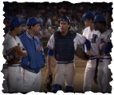

Bull Durham Credo:
In the movie Bull Durham Kevin Costner's character is asked what he believes in. His answer provides us with a poetic format. By following the pattern below, tell what you believe in.
Pattern:I believe in the _________________________
the____________________________________
the____________________________________
the____________________________________
the____________________________________
_______________,_______________,_________________
But (something you don't believe in, i.e. "but the novels of Susan Sontag are self-indulgent, over-rated")
I believe in____________________________
I believe in____________________________
I believe in____________________________
______________,________________,_________________
And I believe in_________________________________(longest)
Student example:My CredoI believe in the wisdom of elders,
the influence of peer pressure,
the importance of success,
the evil that exists in money,
the effectiveness of hard work,
dedication, courage, strength.
But the belief that you don't have to strive
for your goals is just outrageous.
I believe in the truth that will set you free,
I believe in love that will conquer all,
I believe in respect for others,
Courtesy, politeness, gratitude.
And I believe in the fact that tomorrow
isn't promised to you.
---Tim Robbins (Grade 9)